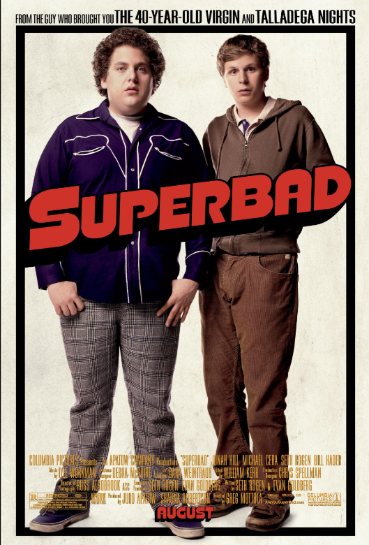

With Spider-Man's identity now revealed, Peter asks Doctor Strange for help. When a spell goes wrong, dangerous foes from other worlds start to appear.
rating:8.2/10
release date:17.12.2025

Three high-school seniors throw a birthday party to make a name for themselves. As the night progresses, things spiral out of control as word of the party spreads.
rating:6.7/10
release date:16.03.2012

Based on the true story of Jann Mardenborough a teenage Gran Turismo player whose gaming skills won him a series of Nissan racing scholarships to become a professional racecar driver.
rating:7.1/10
release date:11.08.2023
Two co-dependent high school seniors are forced to deal with separation anxiety after their plan to stage a booze-soaked party goes awry.
rating:7.6/10
release date:17.08.2007
A young computer whiz kid hacks into a high-profile system to impress a girl, only to find himself targeted by a mysterious group of hackers.
rating:7.4/10
release date:27.09.2014